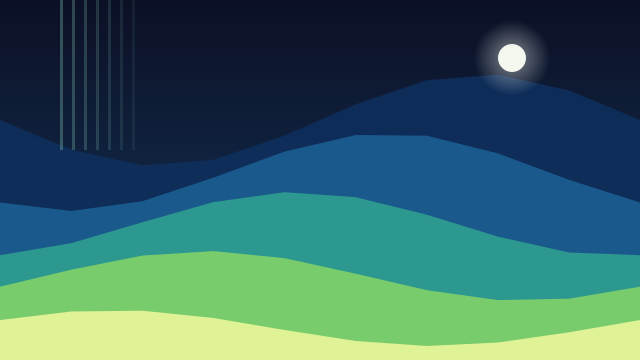
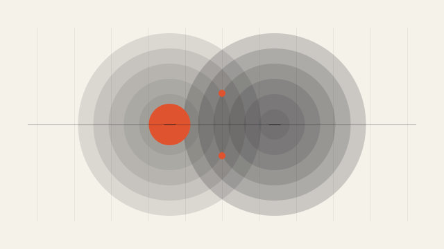
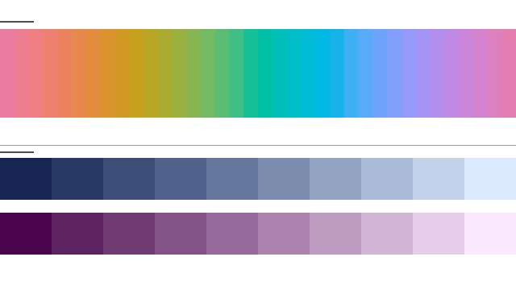
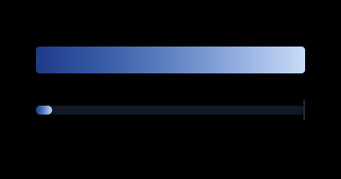

FastSVG · engine-made gallery
Every piece below is output of the FastSVG engine: Scene IR nodes, OKLab color interpolation, gradients sampled through a 256-step LUT. No coordinate in these files was guessed — each one is a computed value.




# regenerate every piece on this page
npx tsx scripts/showcase-fastsvg.mts